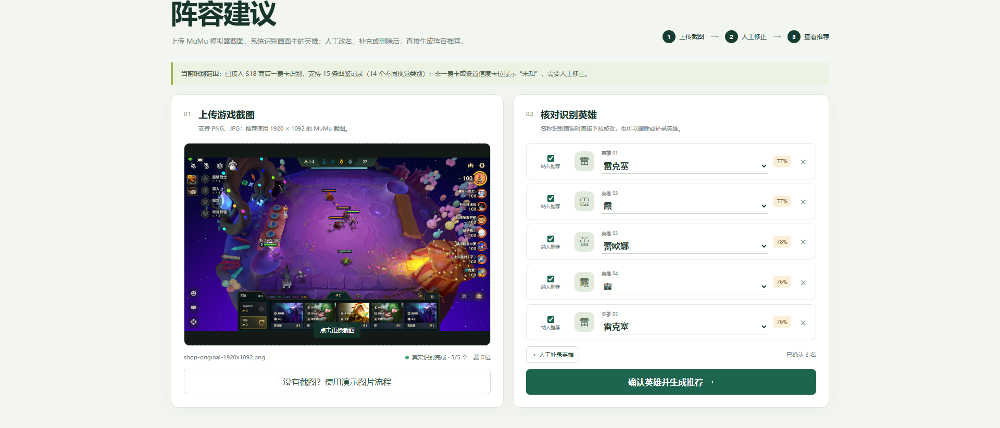
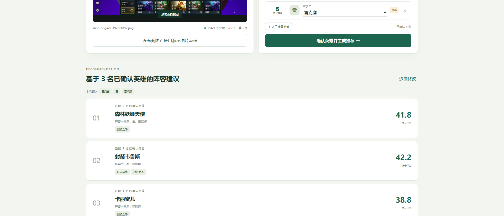

从结构化赛季数据，到装备与阵容推荐，再到 MuMu 实战画面识别。
目标不是替玩家操作，而是在有限时间内完成信息整理、推荐与解释。
英雄、羁绊、装备与阵容采用统一版本字段，避免推荐结果脱离赛季。
先以 10 套可解释阵容建立样本，再根据已有英雄与装备计算匹配度。
识别 5 个商店卡位，把截图中的英雄信息接入推荐输入。
底层保证版本数据可靠，中层生成可解释推荐，外层连接网页原型与模拟器截图。
网页原型 / MuMu 截图 / 课堂演示
FastAPI 接口 / 匹配评分 / 推荐理由
S18 18.4 结构化赛季数据
每套阵容包含英雄组成、核心装备与说明，可被推荐接口直接读取。
FastAPI 接收截图并识别五个商店卡位。网页展示结果，并保留改名、删除和补录入口。

系统从 1920×1092 的 MuMu 截图读取五个商店卡位。本次截图中的五张一费卡均返回角色名称与置信度。

识别结果支持人工改名、删除和补录。确认后，页面根据 10 套固定阵容样本生成三条建议。
后端、视觉识别、网页流程和汇报页面都保留了可重复运行的测试。
当前版本已经完成一费卡识别，并保留人工修正，保证演示结果可控。
41 英雄、27 羁绊、32 装备、10 阵容。
一费卡 15 条记录，覆盖 14 种不同角色图像。